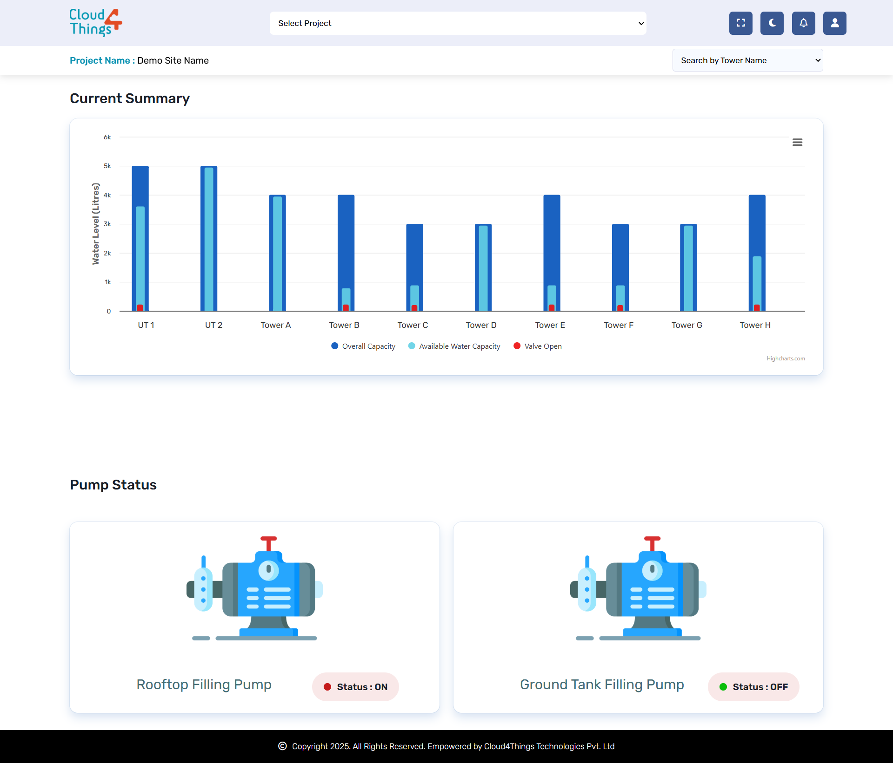
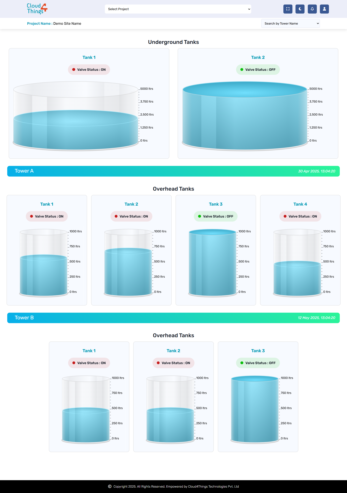

A responsive web interface built using HTML, CSS, and JavaScript to monitor and visualize real-time water levels in storage tanks, ensuring efficient water management.
As the UI Designer and Frontend Developer
for
the
Water Flow Monitoring System, I was
responsible
for
translating complex water level data into
clear,
actionable insights for users.
My primary focus was on designing an
intuitive
and
visually engaging dashboard that allows
users to
monitor real-time water levels and trends in
storage
tanks with ease.
I collaborated closely with stakeholders to
understand their operational needs and pain
points,
ensuring the interface supported efficient
water
management and timely decision-making.
I implemented responsive layouts using HTML,
CSS,
and Bootstrap, ensuring seamless access
across
devices. For data visualization, I
integrated
interactive charts and graphs using
Highcharts
and
Apex Charts, enabling users to quickly
interpret
fluctuations and historical
patterns.
Throughout the project, I prioritized
performance
optimization and accessibility, making sure
the
application loaded quickly and was usable
for
all
users. My contributions helped deliver a
robust,
user-friendly platform that empowers
utilities
to
proactively manage water resources and
prevent
shortages or overflows.
In conclusion, developing the Water Flow Monitoring System was a rewarding journey that allowed me to blend my passion for UI design and frontend development. I ensured the platform is both accessible and visually engaging. This project not only strengthened my technical skills but also deepened my understanding of how thoughtful design can drive operational efficiency and positive user experiences.

